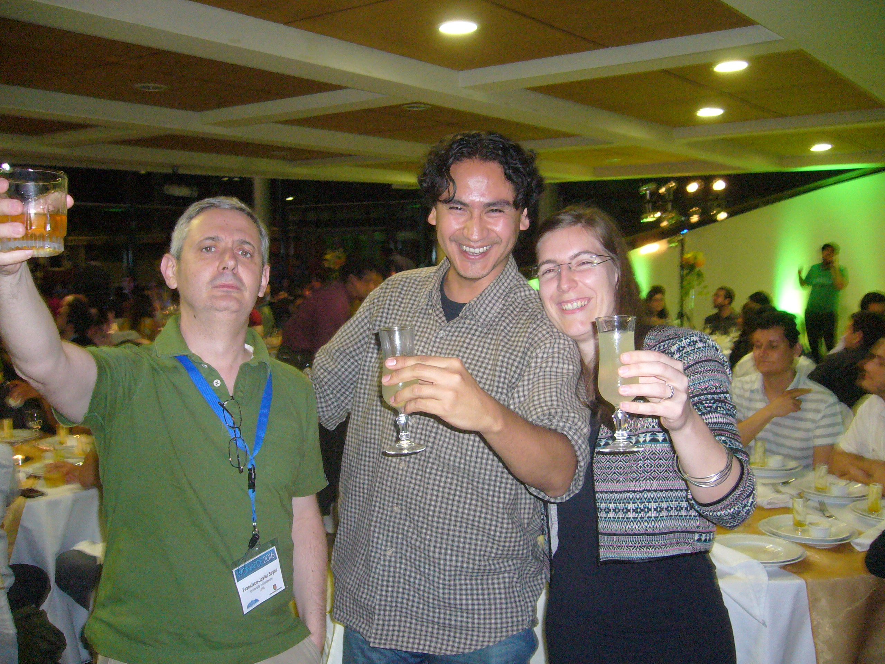
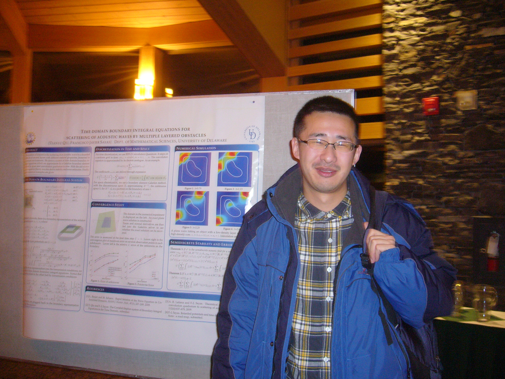

Team
Pancho - Past Members
The official website of Francisco-Javier Sayas and his
team
Thomas Brown
BA in Math, Lynchburg College, 2007.
Ph. D. 2018. Transient elastic waves in piezoelectric materials and their numerical discretization
Moved to Rice University (lecturer at CAAM department)
Tonatiuh Sanchez-Vizuet
MS in Mathematics, National Autonomous University of Mexico.
Ph.D. 2016. Integral and coupled integral-volume methods for transient problems in wave-structure interaction
Moved to the Courant Institute of Mathematical Sciences in NYU (postdoc)
Matthew Hassell
BS in Mathematics, SUNY Binghamton.
Ph.D. 2016 - Some applications of Integral Equations to the solution of Transient Partial Differential Equations
Moved to: JBT Automated Guided Vehicles. Moved next to: Lockheed Martin (2018)
Tianyu Qiu
BS in Mathematics Shanghai Jiaotong University
Ph.D. 2016 Time domain Boundary Integral Equation methods in acoustics, heat diffusion and electromagnetism
Moved to the Department of Computational and Applied Mathematics in Rice University (postdoc) for a year and then to work as a software engineer in California
Zhixing Fu
BS from Shandong University
Ph.D. 2013 - Contributions to the study of the Hybridizable Discontinuous Galerkin Method
Fu Zhixing works for CitiBank in Shanghai.
Sijiang Lu
BS from the Chinese University of Science and Technology in Hefei
Ph.D. 2013. Delta BEM discretization of transient and harmonic waves
Lu Sijiang works now for a financial company in Shanghai.